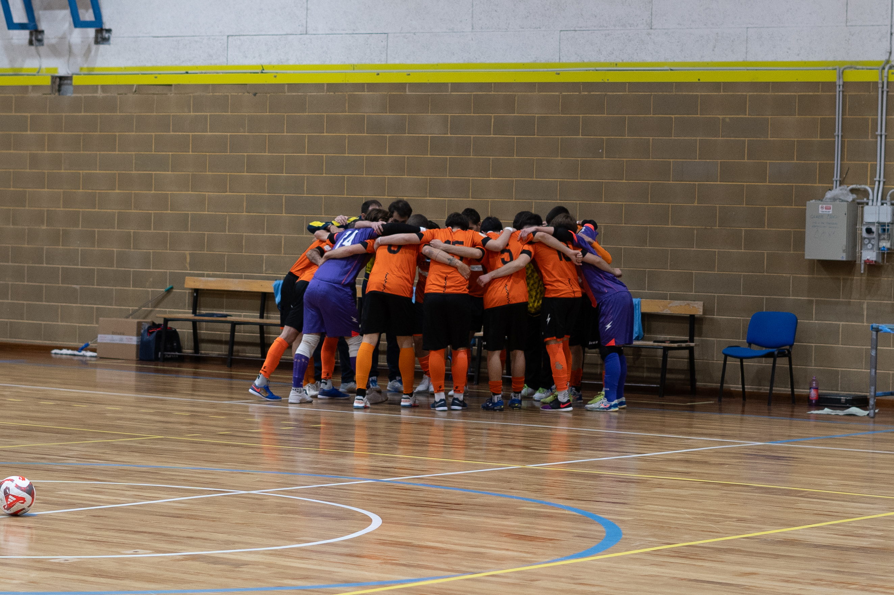

Bel primo tempo dei seggiolai che arrivano al 2-0, poi le individualità delle Eagles trovano degli spiragli nell’ottima guardia di Pozzatello e chiudono sul 5-2. Servirà un largo successo per passare il turno al ritorno
Gol: 11’ pt Iurlaro, 3’ st De Bernardo, 9’ st Stendler e Calderone, 17’ st Stendler, 19’ st Langella.
Va alle Eagles di Cividale l’andata del derby di Coppa Divisione. Manzano che gioca un buon primo tempo fatto di compattezza, organizzazione e affiatamento. Trascinati da un ottimo Pozzatello tra i pali, i seggiolai fanno muro davanti alle occasioni delle Eagles, costringendoli ad affidarsi alle individualità. A metà del primo tempo arriva il vantaggio di Iurlaro, seguito dal raddoppio di De Bernardo a inizio ripresa. Il +2 dura pochissimo, le Eagles pareggiano grazie ai calci piazzati, per poi concludere la rimonta facendo leva sulla loro qualità. Il Manzano ha dimostrato di avere una base di partenza solida, ma serviranno tanto lavoro e crescita per limitare quelle disattenzioni che il campionato interregionale non perdona.
PRIMO TEMPO – Come da pronostico le Eagles provano a prendere il controllo della gara in avvio. Stendler e Turolo forzano spesso l’uno contro uno, ma trovano un Manzano volenteroso e organizzato. La conta delle occasioni pende comunque verso i locali che scheggiano un palo al 5’. Turolo ci prova al volo da fuori, palla toccata col tacco da Calderone che prende il legno.
Il Manzano si appoggia alla fisicità di Fusco e alla qualità di Leonardo De Giorgio e Salah, proprio questi due confezionano le prime occasioni per i seggiolai. Molto bene anche Pozzatello che piazza diversi interventi decisivi, due in particolare: uno a stoppare Guendeline ben servito da Costantini e il secondo su Stendler che gli calcia addosso su corner, divorando un gol già fatto.
La squadra di Movio e Sironi è pericolosa in ripartenza con Fusco, il quale tarda a calciare, ma passa in vantaggio all’11’. Polidori scarica un bel pallone dal centro per l’inserimento di Iurlaro che in area supera Patti con un tocco sotto.
Manzano galvanizzato dal gol che sfiora il raddoppio sempre con Iurlaro. Eagles che faticano a trovare spazi ma arrivano comunque al tiro grazie alla loro qualità. Pozzatello vola sul secondo palo a deviare il tentativo di Stendler.
Sull’altro fronte Salah sfiora il 2-0 ma la sua percussione termina sul palo, la ribattuta di Polidori viene poi deviata in corner. È l’occasione più concreta del Manzano oltre a quella che capiterà poi a Leonardo De Giorgio, provvidenzialmente anticipato in area.
Eagles che chiudono in avanti dando a Pozzatello altre occasioni per esaltarsi. Il portiere piazza altri interventi decisivi, impressionante quello sul tocco ravvicinato di Calderone.
SECONDO TEMPO – La ripresa sembra sorridere al Manzano. Patti vola su Leonardo De Giorgio e dal corner seguente Iurlaro batte in mezzo per capitan De Bernardo che fa 2-0. Sembra il colpo perfetto del Manzano, attento in difesa e bravo a massimizzare le occasioni. Tuttavia le Eagles si ridestano e accorciano subito. Stendler da corner premia il movimento di Turolo che segna dal limite.
Cividalesi presenti in avanti soprattutto con Stendler e Guendeline che sbattono ancora su un grande Pozzatello. In difesa Salah posticipa il pari con un anticipo in area su Barile, poi in ripartenza con Iurlaro spreca il potenziale 3-1, decisivo Patti.
Al 12’ un altro calcio piazzato decreta il pari delle Eagles. Turolo torna il favore a Stendler e lo serve in area per il 2-2.
Nel finale il crack del Cividale è Langella che con le sue percussioni mette in difficoltà un Manzano che inizia a subire troppo. Sempre al 12’ l’ex Pordenone scappa sul lato e mette in mezzo per Calderone che fa 3-2.
Il finale vede le Eagles in avanti. Ennesimo miracolo di Pozzatello su Stendler prima che lo sloveno lo superi sfruttando una palla persa. Un altro errore difensivo costa la ripartenza solitaria di Langella che salta il portiere e fissa il risultato sul 5-2.
Gara di ritorno sabato prossimo, il 26 settembre a Manzano ore 16.00, dove i padroni di casa partiranno con uno svantaggio di 3 reti.